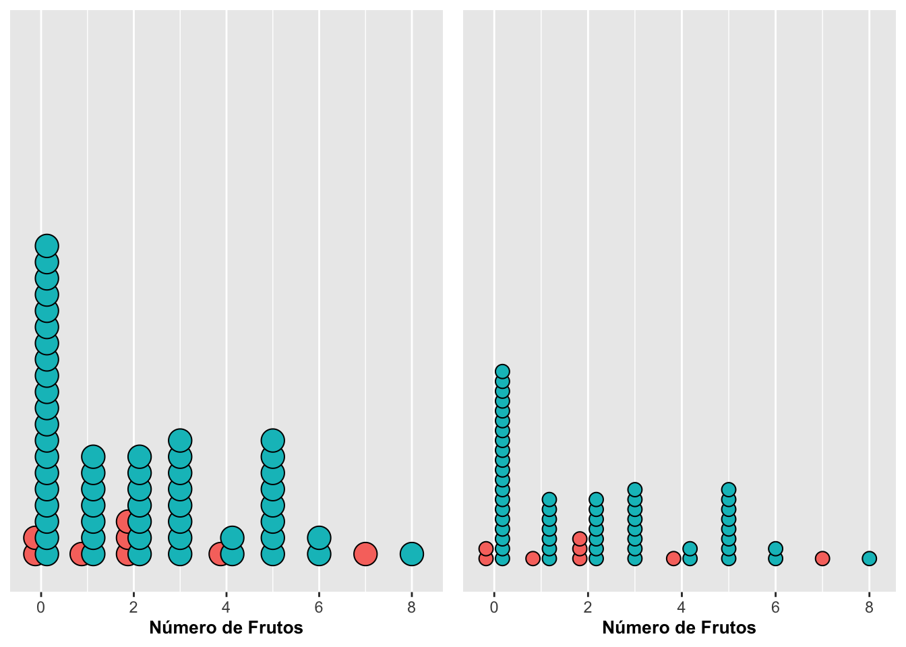

Grafico de puntos de Wilkinson
Fecha de la ultima revisión
## [1] "2022-03-28"Gráficos de Puntos con geom_dotplot
Los paquetes a instalar
library(ggversa) # la función "library" activa el paquete de **ggversa** donde se encuentra los archivos de datos
library(ggplot2) # ggplot2 es la librería que se usará para visualizar los datos
library(tidyverse) # una serie de paquetes para organizar y visualizar los datos
library(gt) # Un paquete para que las tablas se vean más organizada.
library(gridExtra) # Un paquete para organizar las figuras de ggplot2
library(janitor) # un paquete para limpiar los nombres
citation("ggversa")##
## To cite package 'ggversa' in publications use:
##
## Raymond > Tremblay (2017). ggversa: Graficas Versatiles Con
## 'ggplot2'. R package version 0.0.1.
## https://CRAN.R-project.org/package=ggversa
##
## A BibTeX entry for LaTeX users is
##
## @Manual{,
## title = {ggversa: Graficas Versatiles Con 'ggplot2'},
## author = {Raymond > Tremblay},
## year = {2017},
## note = {R package version 0.0.1},
## url = {https://CRAN.R-project.org/package=ggversa},
## }
##
## ATTENTION: This citation information has been auto-generated from the
## package DESCRIPTION file and may need manual editing, see
## 'help("citation")'.dipodium=clean_names(dipodium) # Esta función limpia los nombres de las variables
dipodium## # A tibble: 1,363 × 21
## tree_number tree_species dbh plant_number ramet_number distance orientation
## <int> <chr> <dbl> <int> <int> <dbl> <dbl>
## 1 1 E.o 75 1 1 2.47 40
## 2 1 E.o 76 2 1 1.97 50
## 3 2 E.o 76 3 1 1.95 350
## 4 3 E.o 58 4 1 3.24 210
## 5 4 E.o NA 5 1 0.85 80
## 6 5 E.o 59 6 1 2.62 160
## 7 5 E.o 59 7 1 2.82 170
## 8 6 E.o 8 8 1 3.12 245
## 9 7 E.o 11.5 9 1 1.12 208
## 10 8 E.o 8.5 10 1 0.75 360
## # … with 1,353 more rows, and 14 more variables: number_of_flowers <int>,
## # height_inflo <int>, herbivory <chr>, row_position_nf <int>,
## # number_flowers_position <int>, number_of_fruits <int>, perc_fr_set <dbl>,
## # pardalinum_or_roseum <chr>, fruit_position_effect <int>,
## # frutos_si_o_no <int>, p_or_r_infl_lenght <chr>, num_of_fruits <int>,
## # species_name <chr>, cardinal_orientation <int>gt(head(dipodium)) # la función *head* es para visualizar las primeros 6 filas| tree_number | tree_species | dbh | plant_number | ramet_number | distance | orientation | number_of_flowers | height_inflo | herbivory | row_position_nf | number_flowers_position | number_of_fruits | perc_fr_set | pardalinum_or_roseum | fruit_position_effect | frutos_si_o_no | p_or_r_infl_lenght | num_of_fruits | species_name | cardinal_orientation |
|---|---|---|---|---|---|---|---|---|---|---|---|---|---|---|---|---|---|---|---|---|
| 1 | E.o | 75 | 1 | 1 | 2.47 | 40 | 11 | 35 | n | 1 | 24 | 0 | 0.00 | r | 1 | 0 | r | 0 | r | 1 |
| 1 | E.o | 76 | 2 | 1 | 1.97 | 50 | 19 | 47 | n | 2 | 23 | 0 | 0.00 | r | 2 | 0 | r | 0 | r | 2 |
| 2 | E.o | 76 | 3 | 1 | 1.95 | 350 | 18 | 63 | n | 3 | 25 | 1 | 0.04 | r | 3 | 0 | r | 1 | r | 8 |
| 3 | E.o | 58 | 4 | 1 | 3.24 | 210 | 24 | 47 | n | 4 | 20 | 5 | 0.25 | r | 4 | 0 | r | 5 | r | 5 |
| 4 | E.o | NA | 5 | 1 | 0.85 | 80 | 25 | 61 | n | 5 | 13 | 0 | 0.00 | r | 5 | 0 | r | 0 | r | 2 |
| 5 | E.o | 59 | 6 | 1 | 2.62 | 160 | 17 | 35 | n | 6 | 25 | 2 | 0.08 | p | 6 | 0 | r | 2 | p | 4 |
#devtools::install_github("EvaMaeRey/flipbookr")
library(flipbookr) Gráficos de una variable continua o discreta
Los gráficos de una variable frecuentemente tienen como objetivo evaluar la dispersión de un conjunto de datos. Estos datos pueden ser continuos (por ejemplo, medidas de largo o ancho, conteos) o discretos (agrupados por categoría). A continuación se demuestra la producción de gráficos cuando la variable es discreta y después para datos continuos.
Gráficos de puntos: Dotplot de Wilkinson con geom_dotplot
En el gráfico de puntos, conocido como Wilkinson dotplot, la posición de los compartimentos (bins), depende de los datos, mientras que la concentración de los puntos determina el ancho máximo de los compartimentos. De forma predeterminada los datos serán agrupados uno por encima de los otros en el eje de Y. Esto se demuestra en la siguiente figura utilizando los datos de la orquídea dipodium en el archivo de ggversa. Note que se podría haber usado geom_dotplot sin parámetros adicional y los puntos quedarían representados de color negro. El parámetro fill cambia el color de los puntos y el parámetro colour o color cambia el color de la línea que rodea el círculo.
dipodium %>%
select(number_of_fruits, species_name, tree_species)%>%
filter(species_name=="r")%>% # r representa la especie de Dipodium roseum
ggplot(aes(number_of_fruits))+
geom_dotplot(stackratio=.5, fill="magenta", colour = "red")+
labs(x="Número de Frutos", y="Frecuencia")+
theme(axis.title=element_text(size=10,face="bold")) ***
***
## Warning: Removed 1 rows containing non-finite values (stat_bindot).
## Removed 1 rows containing non-finite values (stat_bindot).
## Removed 1 rows containing non-finite values (stat_bindot).
## Removed 1 rows containing non-finite values (stat_bindot).Remover la información en el eje de “Y”
LA información eje de “Y” no representa la frecuencia de los datos, aquí esta la solución
a=ggplot(dipodium, aes(number_of_fruits))
a+geom_dotplot(fill="blue", colour="red",
stackratio=.7) +
theme(axis.title=element_text(size=20,face="italic", colour="orange")) +
scale_y_continuous(NULL, breaks = NULL) +
labs(x="Número de Frutos", y="Frecuencia")La posición de los datos con stackdir
Con la opción stackdir uno puede ubicar los puntos de forma diferente; por ejemplo, centrados al eje de Y como se muestra en la siguiente figura. Para especificar la dirección en que se quieren ubicar los datos, se indica que los puntos comienzan al centro con el parámetro center; si comienzan arriba, con down; si abajo, con up; y si al centro con los puntos alineados, con centerwhole (centralizados, pero con los datos aliñados).
# Practica cambiando stackdir por las otras alternativas: centerwhole, up, down, center,
a=ggplot(dipodium, aes(number_of_fruits))
a=a+geom_dotplot(fill="red", colour="black",
stackdir="center", stackratio = 0.5) +
labs(x="Número de Frutos", y="Frecuencia")+
theme(axis.title=element_text(size=10,face="bold"))+
scale_y_continuous(NULL, breaks = NULL)
b=ggplot(dipodium, aes(number_of_fruits))
b=b+geom_dotplot(fill="blue", colour="black",
stackdir="centerwhole", stackratio = 0.5) +
labs(x="Número de Frutos", y="Frecuencia")+
theme(axis.title=element_text(size=10,face="bold"))+
scale_y_continuous(NULL, breaks = NULL)
c=ggplot(dipodium, aes(number_of_fruits))
c=c+geom_dotplot(fill="orange", colour="black",
stackdir="up", stackratio = 0.5) +
labs(x="Número de Frutos", y="Frecuencia")+
theme(axis.title=element_text(size=10,face="bold"))+
scale_y_continuous(NULL, breaks = NULL)
d=ggplot(dipodium, aes(number_of_fruits))
name_graphic=d+geom_dotplot(fill="black", colour="white",
stackdir="down", stackratio = 0.5) +
labs(x="Número de Frutos", y="Frecuencia")+
theme(axis.title=element_text(size=10,face="bold"))+
scale_y_continuous(NULL, breaks = NULL)
#name_graphic
#ggsave(name_graphic, "stackdir_down.png") #pdf, .jpg, .tiff## Warning: Removed 1300 rows containing non-finite values (stat_bindot).
## Removed 1300 rows containing non-finite values (stat_bindot).
## Removed 1300 rows containing non-finite values (stat_bindot).
Modificación estética del gráfico, tamaño del punto, color del punto y la intensidad
A continuación se demostrará cómo modificar algunas variables utilizando geom_dotplot. Cuando se utilicen otras funciones tipo geom_, muchas de las opciones explicadas a continuación pueden ser viables y aplicables. Se cambia el tamaño de los puntos con dotsize, a la vez que se cambia la orientación de los datos como se muestra en la misma figura. También se cambia la intensidad del color usando alpha, que tiene un rango de 0 (color pálido) a 1 (color intenso); cuando se usan valores altos, resulta en mayor intensidad el color en la opción fill (del color rojo en este caso), y cuando se usan valores bajos la intensidad del color es más tenue. Nota que en los dos gráficos se cambia el stackratio que es la proporción de solapamiento de puntos. En adición se cambia el tamaño de los puntos con dotsize.
g1=ggplot(dipodium, aes(number_of_fruits))+
geom_dotplot(fill="blue", colour="black",
dotsize=3, stackdir="center", stackratio = 0.2, alpha=.1) +
labs(x="Especie de orquídea", y="Frecuencia")+
theme(axis.title=element_text(size=10,face="bold"))+
scale_y_continuous(NULL, breaks = NULL)
g2=ggplot(dipodium, aes(number_of_fruits))+
geom_dotplot(fill="blue", colour="black",
dotsize=1, stackdir="center", stackratio = 0.7, alpha=.9) +
labs(x="Especie de orquídea", y="Frecuencia")+
theme(axis.title=element_text(size=10,face="bold"))+
scale_y_continuous(NULL, breaks = NULL)## Warning: Removed 1300 rows containing non-finite values (stat_bindot).
## Removed 1300 rows containing non-finite values (stat_bindot).
El solapamiento de los puntos con stackratio
La opción de stackratio es para especificar el grado de solapamiento de los puntos uno sobre el otro, o el espacio que separa cada punto. A la figura anteriormente, ahora se le añade un solapamiento diferente. Además, para que los puntos no se solapen unos con otros se usa la función position=dodge. Si quiere modificar el solapamiento tiene que usar position=position_dodge(width = 0.1) para identificar la cantidad de solapamiento de los grupos, más pequeño el número más solapamiento entre los grupos
a=ggplot(dipodium, aes(number_of_fruits, fill=species_name))+
geom_dotplot(binwidth = .5, stackratio = .7, position = "dodge") +
labs(x="Número de Frutos", y="Frecuencia")+
theme(axis.title=element_text(size=10,face="bold"))+
theme(legend.position = "none")+
scale_y_continuous(NULL, breaks = NULL)b=ggplot(dipodium, aes(number_of_fruits, fill=species_name))+
geom_dotplot(binwidth = .3, stackratio = .7, position=position_dodge(width = .7)) +
labs(x="Número de Frutos", y="Frecuencia")+
theme(axis.title=element_text(size=10,face="bold"))+
theme(legend.position = "none")+
scale_y_continuous(NULL, breaks = NULL)## Warning: Removed 1300 rows containing non-finite values (stat_bindot).
## Removed 1300 rows containing non-finite values (stat_bindot).
Start Here
La función stackgroups
Ahora veremos cómo ubicar los puntos uno encima de los otros o sea apilar los puntos pero que a la misma vez la cantidad de puntos cambie de acuerdo al grupo. Continuaremos con el ejemplo anterior de las orquídeas Dipodium. En la Figura se usa la opción stackgroups en combinación con binwidth y method para lograr ese efecto, tal como se muestra a continuación:
a=ggplot(dipodium, aes(number_of_fruits, fill=species_name))
a+geom_dotplot(stackgroups = TRUE, binwidth = .5, method = "histodot", stackratio = 0.5) +
labs(x="Número de Frutos", y="Frecuencia")+
theme(axis.title=element_text(size=10,face="bold"))+
scale_y_continuous(NULL, breaks = NULL)## Warning: Removed 1300 rows containing non-finite values (stat_bindot).
Remover los NA con drop_na
Cuando hay un grupo no indentificado típicamente se usa NA en la el archivo para identifica la falta de información. En otros programas por ejemplo se usa el 999. En este archivo se identificó dos especie de orquídea, Dipodium roseum y Dipodium pardalinum y hubo ocasiones que no se podia asignar la información una especies especifica (ya que se parecen mucho morfologicamente). Entonces, se identificó como NA en el gráfico (la columna de puntos de la derecha). Normalmente uno no va a querer mostrar esos datos al menos que haya una razón para ello. Esos datos se pueden remover utilizando una opción de excluir datos innecesarios del archivo antes de generar el gráfico. Con las funciones en drop_na del paquete tidyr uno puede remover las variables que tienen NA. Se aprovecha y se usa también la opción binaxis para agrupar los datos en el eje de X o el eje de Y; en este ejemplo se agruparon los puntos en el eje de Y como se muestra a continuación, pero centrados los puntos de acuerdo a su especie:
conNA=dipodium%>%
select(species_name, number_of_fruits)%>%
ggplot(aes(species_name, number_of_fruits, fill=species_name))+
geom_dotplot(dotsize=.5, stackdir="center", alpha=.5, binaxis = "y") +
labs(x="Especie de orquídea", y="Número de frutos")+
theme(axis.title=element_text(size=10,face="bold"))+
theme(legend.position = "none")+
scale_y_continuous(NULL, breaks = NULL)
sinNA=dipodium%>%
select(species_name, number_of_fruits)%>%
drop_na()%>%
ggplot(aes(species_name, number_of_fruits, fill=species_name))+
geom_dotplot(dotsize=.5, stackdir="center", alpha=.9, binaxis = "y") +
labs(x="Especie de orquídea", y="Número de frutos")+
theme(axis.title=element_text(size=10,face="bold"))+
theme(legend.position = "none")+
scale_y_continuous(NULL, breaks = NULL)## Warning: Removed 1300 rows containing non-finite values (stat_bindot).
La función binwidth
El ancho de los compartimentos (o puntos en nuestro caso) es por defecto 1/30 el rango de los datos. Eso se puede cambiar utilizando la opción binwidth (binwidth o sea el ancho del compartimento). Cuando el método (o sea, si se especifica la opción method) para representar los puntos es la densidad de puntos (opción dotdensity), entonces binwidth es el máximo del ancho de compartimiento. Alternativamente, cuando el método se específica como histodot, el binwidth organizará los puntos a una distancia fija de los compartimiento. A continuación, se demuestra la opción por densidad de puntos (así es por omisión) y con un ancho de 2 y de 1 por punto. Para este caso, las categorías están agrupadas por unidades de 2; las plantas con 0 y 1 fruto, con 2 y 3 frutos y así subsiguientemente. Además, se cambió el tamaño de los puntos con dotsize a 0.1.
a=ggplot(dipodium, aes(number_of_fruits))+
geom_dotplot(binwidth =2, dotsize=0.1) +
labs(x="Número de Frutos", y="Frecuencia")+
theme(axis.title=element_text(size=10,face="bold"))+
scale_y_continuous(NULL, breaks = NULL)
b=ggplot(dipodium, aes(number_of_fruits))+
geom_dotplot(binwidth = 1, dotsize=0.1) +
labs(x="Número de Frutos", y="Frecuencia")+
theme(axis.title=element_text(size=10,face="bold"))+
scale_y_continuous(NULL, breaks = NULL)## Warning: Removed 1300 rows containing non-finite values (stat_bindot).
## Removed 1300 rows containing non-finite values (stat_bindot).
La función binpositions
Otra alternativa para lograr la misma representación de poner los puntos uno encima de los otros por grupo es utilizando la opción binpositions= all.
a=ggplot(dipodium, aes(number_of_fruits, fill=species_name))
a+geom_dotplot(stackgroups = TRUE, binwidth = .5, binpositions = "all", dotsize = .5) +
labs(x="Número de Frutos", y="Frecuencia")+
theme(axis.title=element_text(size=10,face="bold"))+
scale_y_continuous(NULL, breaks = NULL)## Warning: Removed 1300 rows containing non-finite values (stat_bindot).
Opciones y Parametros de geom_dotplot
A continuación se resumen las opciones y parámetros más importantes de geom_dotplot:
- ggplot(el archivo de datos, aes(la variable continua))
- geom_dotplot (x, y, alpha, color, fill, na.rm, binwidth, binaxis, method, binposition, stackdir, stackratio, dotsize, stackgroup)
- alpha: la intensidad del color
- fill: el color de los puntos
- color: el color de la línea alrededor (en este caso alrededor de los puntos)
- na.rm: remueve los datos NA con una advertencia, el valor predeterminado es {FALSE}; si se define como {TRUE}, los remueve sin advertencia
- binwidth: el ancho de los compartimentos donde por omisión el rango es de 1/30 el rango de los datos
- binaxis: determina si se agrupa en el eje de {X} (de forma predeterminada) o en el eje de {Y}
- method: el método predeterminado es {dotdensity}, donde los {bins} estarán organizados por la densidad de los puntos; cuando es {histodot}, estarán organizados por una distancia fija de los {bins}
- binposition: cuando {method} es {dotdensity}, {bygroup} (el predeterminado) posiciona los grupos {bins} por separado; cuando el {method} es {all}, determina las posiciones de los bins con todos los datos sin tomar en cuenta los diferentes grupos a que pertenecen los datos; este último parámetro se usa cuando hay más de un grupo.
- stackdir: determina en qué dirección se apilan los puntos; para arriba es {up} (predeterminado), para abajo es {down}, para el centro es {center}, y en el centro con los puntos alineados es {centerwhole}
- stackratio: determina cuán cercano se amplían los datos; el predeterminado es 1, donde los puntos apenas se tocan; si se quieren más cercanos, se usa un número más pequeño; si se quieren más separados, se usa un número más grande
- dotsize: el tamaño de los puntos relativo al {binwidth}; el valor predeterminado es 1
- stackgroup: determina si los puntos deberían estar apilados en una variable de grupo.